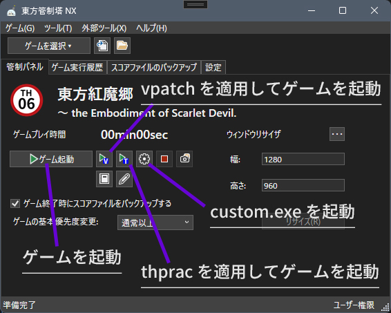

東方原作特化ゲームランチャー Touhou Launch Site 新バージョン。
新機能
Touhou Launch Site ver2.x.x の主な新機能をご紹介します。
[ゲーム選択]ボタン実装、パスが登録されているゲームのみ選択メニューに表示されるようにした。
 ゲームパス一括設定ダイアログを実装した。([ゲーム(G)]→[ゲームのパスを設定する])
体験版として指定できるようにした。(これにより神霊廟以降体験版のスコアファイルバックアップに対応)
体験版として指定された作品はゲーム選択メニューでTRアイコンが表示されるようにした。
ゲームパス一括設定ダイアログを実装した。([ゲーム(G)]→[ゲームのパスを設定する])
体験版として指定できるようにした。(これにより神霊廟以降体験版のスコアファイルバックアップに対応)
体験版として指定された作品はゲーム選択メニューでTRアイコンが表示されるようにした。
 スコアファイルのバックアップ管理機能をメインウィンドウに統合した。
log.txt(東方動作記録)を開く機能を追加した。
ウィンドウリサイザを簡素化した。
補助ツールインストールダイアログでインストール先を複数指定できるようにした。
スコアファイルのバックアップ管理機能をメインウィンドウに統合した。
log.txt(東方動作記録)を開く機能を追加した。
ウィンドウリサイザを簡素化した。
補助ツールインストールダイアログでインストール先を複数指定できるようにした。
他にも様々な変更が含まれます。詳しくはアプリケーションに同胞されているReleaseNote.txtをご参照ください。
主な使い方
ゲームや custom.exe(環境カスタムプログラム) を起動する
[ゲーム選択▾]ボタンから作品を選択します。
管制パネルのボタンからゲームの起動や custom.exe(環境カスタムプログラム) の起動など様々な操作を実行できます。

ゲームのパスを設定する
[ゲーム(G)]→[ゲームのパスを設定する]から、「ゲームのパスの設定」ダイアログを起動できます。
作品を選択し、[参照(B)]ボタンからその作品の実行ファイル(例:東方紅魔郷→東方紅魔郷.exe、東方輝針城→th14.exe)を指定してください。
体験版の場合は[体験版として設定する]にチェックをいれてください。
メインウィンドウの[ゲーム選択▾]ボタンをクリックすると表示されるゲーム選択メニューには、「ゲームのパスの設定」ダイアログでパスを設定した作品のみが表示されます。
対応している作品
東方紅魔郷 ～ the Embodiment of Scarlet Devil.
東方妖々夢 ～ Perfect Cherry Blossom.
東方永夜抄 ～ Imperishable Night.
東方花映塚 ～ Phantasmagoria of Flower View.
東方風神録 ～ Mountain of Faith.
東方地霊殿 ～ Subterranean Animism.
東方星蓮船 ～ Undefined Fantastic Object.
東方神霊廟 ～ Ten Desires.
東方輝針城 ～ Double Dealing Character.
東方紺珠伝 ～ Legacy of Lunatic Kingdom.
東方天空璋 ～ Hidden Star in Four Seasons.
東方鬼形獣 ～ Wily Beast and Weakest Creature.
東方虹龍洞 ～ Unconnected Marketeers.
東方獣王園 ～ Unfinished Dream of All Living Ghost.
東方文花帖 ～ Shoot the Bullet.
ダブルスポイラー ～ 東方文花帖
妖精大戦争 ～ 東方三月精
弾幕アマノジャク ～ Impossible Spell Card.
秘封ナイトメアダイアリー ～ Violet Detector.
バレットフィリア達の闇市場 〜 100th Black Market.
推奨動作環境
Microsoft Windows 10/11
.NET Runtime 8.0 または .NET Desktop Runtime 8.0 のインストールが必要です。
以下のリンクよりインストーラーをダウンロードしてインストールをお願いします。
.NET 8.0 のダウンロード
免責事項
Touhou Launch Site の実行ファイルには2条項BSDライセンスが適用されます。
詳しくは以下のリンクより参照してください。
免責事項
ダウンロード
ソースコード
Touhou Launch Site のソースコードは GitHub で2条項BSDライセンスで公開されています。
Touhou Launch Site の GitHubリポジトリ
開発協力者
千葉(@oe725877)
稲凪咲(お餅のCreeper)(@Riku_2004)